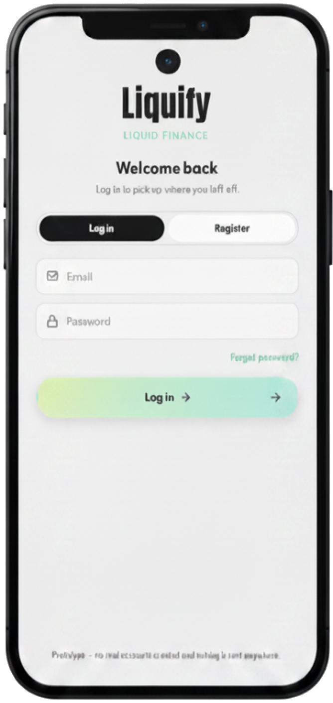
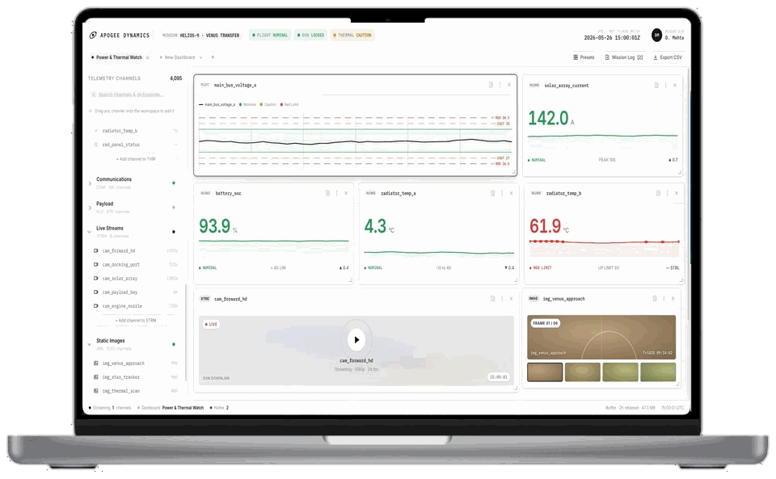
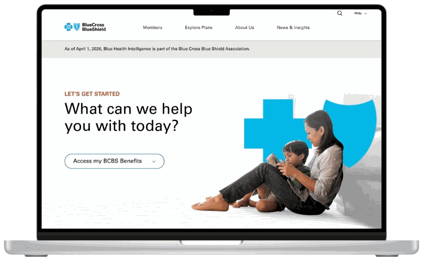
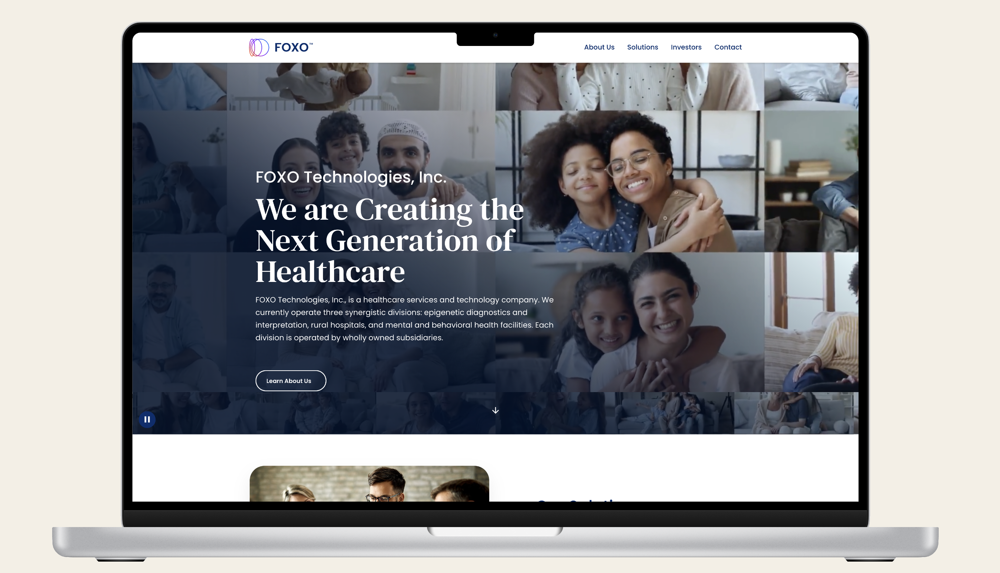

A complete view of my work across enterprise SaaS, healthcare, insurance, and consumer products — from end-to-end platform design to focused web experiences. Select any project to read the full case study.



